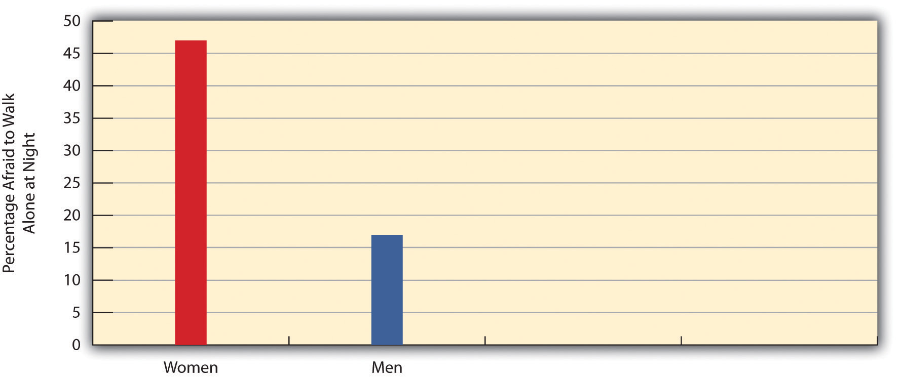
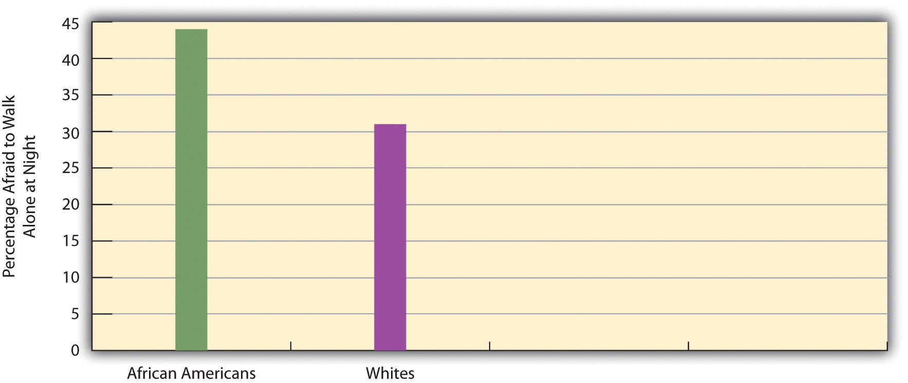
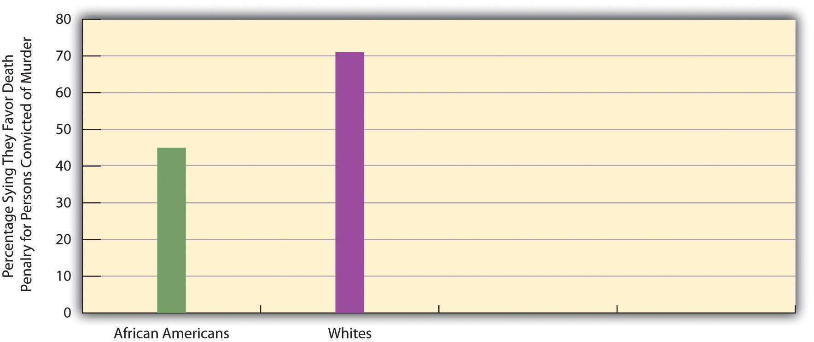
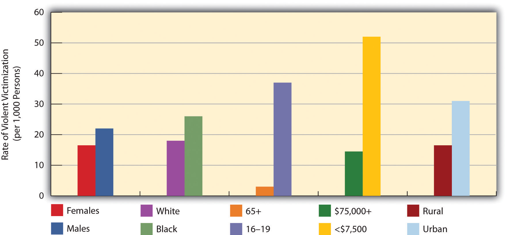
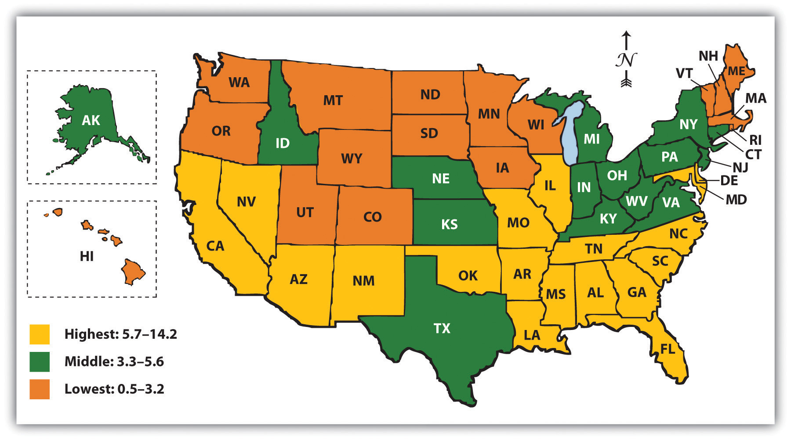
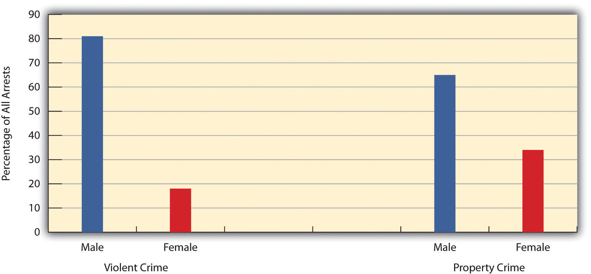

“Attack Leaves Voter, 73, in Pain and Fear,” the headline said. A 73-year-old woman had just voted in the primary election in Boston, Massachusetts. As she walked home, two men rushed up, grabbed her purse, and knocked her down. She later said, “In this situation, you don’t think too much. Only, you get scared when people try to take everything from you.” A neighbor who came to the victim’s aid recalled, “I heard a woman in distress, screaming for help. I just jumped out of bed and looked out the window. And I could see an elderly person on her knees, crying.” The police later arrested a 19-year-old suspect for robbery and assault and battery. The city’s district attorney said of the crime, “It’s despicable. Only a coward would attack a 73-year-old woman from behind. He’s brought shame to himself and his family, and he can count on an extremely aggressive prosecution.” (Ellement, 2008)Ellement, J. R. (2008, September 18). Attack leaves voter, 73, in pain and fear. The Boston Globe, p. B1.
This terrible crime was just one of millions that occur in the United States each year. A central message of this book so far is that society is possible because people conform to its norms, values, and roles. As the sad story of the 73-year-old Boston voter illustrates, this chapter has a different message: that people often violate their society’s norms and are sometimes punished for doing so. Why do they commit deviance and crime? What influences their chances of being punished? How do behaviors come to be defined as deviant or criminal? Recalling this book’s emphasis on changing society, how can crime and deviance be reduced? These are questions that sociologists have long tried to answer, and we explore possible answers in the pages that follow.
DevianceBehavior that violates norms and arouses negative social reactions. is behavior that violates social norms and arouses negative social reactions. Some behavior is considered so harmful that governments enact written laws that ban the behavior. CrimeBehavior that violates criminal laws. is behavior that violates these laws and is certainly an important type of deviance that concerns many Americans.
The fact that both deviance and crime arouse negative social reactions reminds us that every society needs to ensure that its members generally obey social norms in their daily interaction. Social controlThe ways in which society prevents and sanctions behavior that violates social norms. refers to ways in which a society tries to prevent and sanction behavior that violates norms. Just as a society like the United States has informal and formal norms (see Chapter 2 "Eye on Society: Doing Sociological Research"), so does it have informal and formal social control. Generally, informal social control is used to control behavior that violates informal norms, and formal social control is used to control behavior that violates formal norms. We typically decline to violate informal norms, if we even think of violating them in the first place, because we fear risking the negative reactions of other people. These reactions, and thus examples of informal social control, include anger, disappointment, ostracism, and ridicule. Formal social control in the United States typically involves the legal system (police, judges and prosecutors, corrections officials) and also, for businesses, the many local, state, and federal regulatory agencies that constitute the regulatory system.
Social control is never perfect, and so many norms and people exist that there are always some people who violate some norms. In fact, Émile Durkheim (1895/1962),Durkheim, É. (1962). The rules of sociological method (Ed. S. Lukes). New York, NY: Free Press. (Original work published 1895) a founder of sociology discussed in Chapter 1 "Sociology and the Sociological Perspective", stressed that a society without deviance is impossible for at least two reasons. First, the collective conscience (see Chapter 1 "Sociology and the Sociological Perspective") is never strong enough to prevent all rule breaking. Even in a “society of saints,” such as a monastery, he said, rules will be broken and negative social reactions aroused. Second, because deviance serves several important functions for society (which we discuss later in this chapter), any given society “invents” deviance by defining certain behaviors as deviant and the people who commit them as deviants. Because Durkheim thought deviance was inevitable for these reasons, he considered it a normal part of every healthy society.
Although deviance is normal in this regard, it remains true that some people are more likely than others to commit it. It is also true that some locations within a given society have higher rates of deviance than other locations; for example, U.S. cities have higher rates of violent crime than do rural areas. Still, Durkheim’s monastery example raises an important point about the relativity of deviance: whether a behavior is considered deviant depends on the circumstances in which the behavior occurs and not on the behavior itself. Although talking might be considered deviant in a monastery, it would certainly be considered very normal elsewhere. If an assailant, say a young male, murders someone, he faces arrest, prosecution, and, in many states, possible execution. Yet if a soldier kills someone in wartime, he may be considered a hero. Killing occurs in either situation, but the context and reasons for the killing determine whether the killer is punished or given a medal.
Deviance is also relative in two other ways. First, it is relative in space: a given behavior may be considered deviant in one society but acceptable in another society. Recall the discussion of sexual behavior in Chapter 3 "Culture", where we saw that sexual acts condemned in some societies are often practiced in others. Second, deviance is relative in time: a behavior in a given society may be considered deviant in one time period but acceptable many years later; conversely, a behavior may be considered acceptable in one time period but deviant many years later. In the late 1800s, many Americans used cocaine, marijuana, and opium, because they were common components of over-the-counter products for symptoms like depression, insomnia, menstrual cramps, migraines, and toothaches. Coca-Cola originally contained cocaine and, perhaps not surprisingly, became an instant hit when it went on sale in 1894 (Goode, 2008).Goode, E. (2008). Drugs in American society. New York, NY: McGraw-Hill. Today, of course, all three drugs are illegal.
The relativity of deviance in all these ways is captured in a famous statement by sociologist Howard S. Becker (1963, p. 9),Becker, H. S. (1963). Outsiders: Studies in the sociology of deviance. New York, NY: Free Press. who wrote several decades ago that
deviance is not a quality of the act the person commits, but rather a consequence of the application by others of rules or sanctions to an “offender.” The deviant is one to whom that label has been successfully applied; deviant behavior is behavior that people so label.
This insight raises some provocative possibilities for society’s response to deviance and crime. First, harmful behavior committed by corporations and wealthy individuals may not be considered deviant, perhaps because “respectable” people engage in them. Second, prostitution and other arguably less harmful behaviors may be considered very deviant because they are deemed immoral or because of bias against the kinds of people (poor and nonwhite) thought to be engaging in them. These considerations yield several questions that need to be answered in the study of deviance. First, why are some individuals more likely than others to commit deviance? Second, why do rates of deviance differ within social categories such as gender, race, social class, and age? Third, why are some locations more likely than other locations to have higher rates of deviance? Fourth, why are some behaviors more likely than others to be considered deviant? Fifth, why are some individuals and those from certain social backgrounds more likely than other individuals to be considered deviant and punished for deviant behavior? Sixth and last but certainly not least, what can be done to reduce rates of violent crime and other serious forms of deviance? The sociological study of deviance and crime aims to answer all of these questions.
If we want to reduce violent crime and other serious deviance, we must first understand why it occurs. Many sociological theories of deviance exist, and together they offer a more complete understanding of deviance than any one theory offers by itself. Together they help answer the questions posed earlier: why rates of deviance differ within social categories and across locations, why some behaviors are more likely than others to be considered deviant, and why some kinds of people are more likely than others to be considered deviant and to be punished for deviant behavior. As a whole, sociological explanations highlight the importance of the social environment and of social interaction for deviance and the commision of crime. As such, they have important implications for how to reduce these behaviors. Consistent with this book’s public sociology theme, a discussion of several such crime-reduction strategies concludes this chapter.
We now turn to the major sociological explanations of crime and deviance. A summary of these explanations appears in Table 7.1 "Theory Snapshot: Summary of Sociological Explanations of Deviance and Crime".
Table 7.1 Theory Snapshot: Summary of Sociological Explanations of Deviance and Crime
| Major theory | Related explanation | Summary of explanation |
|---|---|---|
| Functionalist | Durkheim’s views | Deviance has several functions: (a) it clarifies norms and increases conformity, (b) it strengthens social bonds among the people reacting to the deviant, and (c) it can help lead to positive social change. |
| Social ecology | Certain social and physical characteristics of urban neighborhoods contribute to high crime rates. These characteristics include poverty, dilapidation, population density, and population turnover. | |
| Strain theory | According to Robert Merton, deviance among the poor results from a gap between the cultural emphasis on economic success and the inability to achieve such success through the legitimate means of working. According to Richard Cloward and Lloyd Ohlin, differential access to illegitimate means affects the type of deviance in which individuals experiencing strain engage. | |
| Deviant subcultures | Poverty and other community conditions give rise to certain subcultures through which adolescents acquire values that promote deviant behavior. Albert Cohen wrote that lack of success in school leads lower-class boys to join gangs whose value system promotes and rewards delinquency. Walter Miller wrote that delinquency stems from focal concerns, a taste for trouble, toughness, cleverness, and excitement. Marvin Wolfgang and Franco Ferracuti argued that a subculture of violence in inner-city areas promotes a violent response to insults and other problems. | |
| Social control theory | Travis Hirschi wrote that delinquency results from weak bonds to conventional social institutions such as families and schools. These bonds include attachment, commitment, involvement, and belief. | |
| Conflict | People with power pass laws and otherwise use the legal system to secure their position at the top of society and to keep the powerless on the bottom. The poor and minorities are more likely because of their poverty and race to be arrested, convicted, and imprisoned. | |
| Feminist perspectives | Inequality against women and antiquated views about relations between the sexes underlie rape, sexual assault, intimate partner violence, and other crimes against women. Sexual abuse prompts many girls and women to turn to drugs and alcohol use and other antisocial behavior. Gender socialization is a key reason for large gender differences in crime rates. | |
| Symbolic interactionism | Differential association theory | Edwin H. Sutherland argued that criminal behavior is learned by interacting with close friends and family members who teach us how to commit various crimes and also about the values, motives, and rationalizations we need to adopt in order to justify breaking the law. |
| Labeling theory | Deviance results from being labeled a deviant; nonlegal factors such as appearance, race, and social class affect how often labeling occurs. |
Several explanations may be grouped under the functionalist perspective in sociology, as they all share this perspective’s central view on the importance of various aspects of society for social stability and other social needs.
As noted earlier, Émile Durkheim said deviance is normal, but he did not stop there. In a surprising and still controversial twist, he also argued that deviance serves several important functions for society.
First, Durkheim said, deviance clarifies social norms and increases conformity. This happens because the discovery and punishment of deviance reminds people of the norms and reinforces the consequences of violating them. If your class were taking an exam and a student was caught cheating, the rest of the class would be instantly reminded of the rules about cheating and the punishment for it, and as a result they would be less likely to cheat.
A second function of deviance is that it strengthens social bonds among the people reacting to the deviant. An example comes from the classic story The Ox-Bow Incident (Clark, 1940),Clark, W. V. T. (1940). The ox-bow incident. New York, NY: Random House. in which three innocent men are accused of cattle rustling and are eventually lynched. The mob that does the lynching is very united in its frenzy against the men, and, at least at that moment, the bonds among the individuals in the mob are extremely strong.
A final function of deviance, said Durkheim, is that it can help lead to positive social change. Although some of the greatest figures in history—Socrates, Jesus, Joan of Arc, Mahatma Gandhi, and Martin Luther King Jr. to name just a few—were considered the worst kind of deviants in their time, we now honor them for their commitment and sacrifice.
Émile Durkheim wrote that deviance can lead to positive social change. Many Southerners had strong negative feelings about Dr. Martin Luther King Jr. during the civil rights movement, but history now honors him for his commitment and sacrifice.
Source: Photo courtesy of U.S. Library of Congress, http://www.loc.gov/pictures/resource/cph.3c26559.
Sociologist Herbert Gans (1996)Gans, H. J. (1996). The war against the poor: The underclass and antipoverty policy. New York, NY: Basic Books. pointed to an additional function of deviance: deviance creates jobs for the segments of society—police, prison guards, criminology professors, and so forth—whose main focus is to deal with deviants in some manner. If deviance and crime did not exist, hundreds of thousands of law-abiding people in the United States would be out of work!
Although deviance can have all of these functions, many forms of it can certainly be quite harmful, as the story of the mugged voter that began this chapter reminds us. Violent crime and property crime in the United States victimize millions of people and households each year, while crime by corporations has effects that are even more harmful, as we discuss later. Drug use, prostitution, and other “victimless” crimes may involve willing participants, but these participants often cause themselves and others much harm. Although deviance according to Durkheim is inevitable and normal and serves important functions, that certainly does not mean the United States and other nations should be happy to have high rates of serious deviance. The sociological theories we discuss point to certain aspects of the social environment, broadly defined, that contribute to deviance and crime and that should be the focus of efforts to reduce these behaviors.
An important sociological approach, begun in the late 1800s and early 1900s by sociologists at the University of Chicago, stresses that certain social and physical characteristics of urban neighborhoods raise the odds that people growing up and living in these neighborhoods will commit deviance and crime. This line of thought is now called the social ecology approachThe view that certain characteristics of neighborhoods and communities influence the likelihood of committing deviance and crime. (Mears, Wang, Hay, & Bales, 2008).Mears, D. P., Wang, X., Hay, C., & Bales, W. D. (2008). Social ecology and recidivism: Implications for prisoner reentry. Criminology, 46, 301–340. Many criminogenic (crime-causing) neighborhood characteristics have been identified, including high rates of poverty, population density, dilapidated housing, residential mobility, and single-parent households. All of these problems are thought to contribute to social disorganizationThe weakening of social bonds and conventional social institutions in a community., or weakened social bonds and social institutions, that make it difficult to socialize children properly and to monitor suspicious behavior (Mears, Wang, Hay, & Bales, 2008; Sampson, 2006).Mears, D. P., Wang, X., Hay, C., & Bales, W. D. (2008). Social ecology and recidivism: Implications for prisoner reentry. Criminology, 46, 301–340; Sampson, R. J. (2006). How does community context matter? Social mechanisms and the explanation of crime rates. In P.-O. H. Wikström & R. J. Sampson (Eds.), The explanation of crime: Context, mechanisms, and development (pp. 31–60). New York, NY: Cambridge University Press.
Improving Neighborhood Conditions Helps Reduce Crime Rates
One of the sociological theories of crime discussed in the text is the social ecology approach. To review, this approach attributes high rates of deviance and crime to the neighborhood’s social and physical characteristics, including poverty, high population density, dilapidated housing, and high population turnover. These problems create social disorganization that weakens the neighborhood’s social institutions and impairs effective child socialization.
Much empirical evidence supports social ecology’s view about negative neighborhood conditions and crime rates and suggests that efforts to improve these conditions will lower crime rates. Some of the most persuasive evidence comes from the Project on Human Development in Chicago Neighborhoods (directed by sociologist Robert J. Sampson), in which more than 6,000 children, ranging in age from birth to 18, and their parents and other caretakers were studied over a 7-year period. The social and physical characteristics of the dozens of neighborhoods in which the subjects lived were measured to permit assessment of these characteristics’ effects on the probability of delinquency. A number of studies using data from this project confirm the general assumptions of the social ecology approach. In particular, delinquency is higher in neighborhoods with lower levels of “collective efficacy,” that is, in neighborhoods with lower levels of community supervision of adolescent behavior.
The many studies from the Chicago project and data in several other cities show that neighborhood conditions greatly affect the extent of delinquency in urban neighborhoods. This body of research in turn suggests that strategies and programs that improve the social and physical conditions of urban neighborhoods may well help decrease the high rates of crime and delinquency that are so often found there. (Bellair & McNulty, 2009; Sampson, 2006)Bellair, P. E., & McNulty, T. L. (2009). Gang membership, drug selling, and violence in neighborhood context. Justice Quarterly, 26, 644–669; Sampson, R. J. (2006). How does community context matter? Social mechanisms and the explanation of crime rates. In P.-O. H. Wikström & R. J. Sampson (Eds.), The explanation of crime: Context, mechanisms, and development (pp. 31–60). New York, NY: Cambridge University Press.
Failure to achieve the American dream lies at the heart of Robert Merton’s (1938)Merton, R. K. (1938). Social structure and anomie. American Sociological Review, 3, 672–682. famous strain theoryRobert Merton’s view that deviance is caused by a failure to achieve the American goal of financial success through the conventional means of working. (also called anomie theory). Recall from Chapter 1 "Sociology and the Sociological Perspective" that Durkheim attributed high rates of suicide to anomie, or normlessness, that occurs in times when social norms are unclear or weak. Adapting this concept, Merton wanted to explain why poor people have higher deviance rates than the nonpoor. He reasoned that the United States values economic success above all else and also has norms that specify the approved means, working, for achieving economic success. Because the poor often cannot achieve the American dream of success through the conventional means of working, they experience a gap between the goal of economic success and the means of working. This gap, which Merton likened to Durkheim’s anomie because of the resulting lack of clarity over norms, leads to strain or frustration. To reduce their frustration, some poor people resort to several adaptations, including deviance, depending on whether they accept or reject the goal of economic success and the means of working. Table 7.2 "Merton’s Anomie Theory" presents the logical adaptations of the poor to the strain they experience. Let’s review these briefly.
Table 7.2 Merton’s Anomie Theory
| Adaptation | Goal of economic success | Means of working |
|---|---|---|
| I. Conformity | + | + |
| II. Innovation | + | − |
| III. Ritualism | − | + |
| IV. Retreatism | − | − |
| V. Rebellion | ± | ± |
| + means accept, − means reject, ± means reject and work for a new society | ||
Despite their strain, most poor people continue to accept the goal of economic success and continue to believe they should work to make money. In other words, they continue to be good, law-abiding citizens. They conform to society’s norms and values, and, not surprisingly, Merton calls their adaptation conformity.
Faced with strain, some poor people continue to value economic success but come up with new means of achieving it. They rob people or banks, commit fraud, or use other illegal means of acquiring money or property. Merton calls this adaptation innovation.
Other poor people continue to work at a job without much hope of greatly improving their lot in life. They go to work day after day as a habit. Merton calls this third adaptation ritualism. This adaptation does not involve deviant behavior but is a logical response to the strain poor people experience.
In Merton’s fourth adaptation, retreatism, some poor people withdraw from society by becoming hobos or vagrants or by becoming addicted to alcohol, heroin, or other drugs. Their response to the strain they feel is to reject both the goal of economic success and the means of working.
Merton’s fifth and final adaptation is rebellion. Here poor people not only reject the goal of success and the means of working but work actively to bring about a new society with a new value system. These people are the radicals and revolutionaries of their time. Because Merton developed his strain theory in the aftermath of the Great Depression, in which the labor and socialist movements had been quite active, it is not surprising that he thought of rebellion as a logical adaptation of the poor to their lack of economic success.
Although Merton’s theory has been popular over the years, it has some limitations. Perhaps most important, it overlooks deviance such as fraud by the middle and upper classes and also fails to explain murder, rape, and other crimes that usually are not done for economic reasons. It also does not explain why some poor people choose one adaptation over another.
Merton’s strain theory stimulated other explanations of deviance that built on his concept of strain. Differential opportunity theoryRichard Cloward and Lloyd Ohlin’s view that differential access to illegitimate means helps determine the types of deviance in which poor people engage., developed by Richard Cloward and Lloyd Ohlin (1960),Cloward, R. A., & Ohlin, L. E. (1960). Delinquency and opportunity: A theory of delinquent gangs. New York, NY: Free Press. tried to explain why the poor choose one or the other of Merton’s adaptations. Whereas Merton stressed that the poor have differential access to legitimate means (working), Cloward and Ohlin stressed that they have differential access to illegitimate means. For example, some live in neighborhoods where organized crime is dominant and will get involved in such crime; others live in neighborhoods rampant with drug use and will start using drugs themselves.
In a more recent formulation, two sociologists, Steven F. Messner and Richard Rosenfeld (2007),Messner, S. F., & Rosenfeld, R. (2007). Crime and the American dream. Belmont, CA: Wadsworth. expanded Merton’s view by arguing that in the United States crime arises from several of our most important values, including an overemphasis on economic success, individualism, and competition. These values produce crime by making many Americans, rich or poor, feel they never have enough money and by prompting them to help themselves even at other people’s expense. Crime in the United States, then, arises ironically from the country’s most basic values.
In yet another extension of Merton’s theory, Robert Agnew (2007)Agnew, R. (2007). Pressured into crime: An overview of general strain theory. Los Angeles, CA: Roxbury. reasoned that adolescents experience various kinds of strain in addition to the economic type addressed by Merton. A romantic relationship may end, a family member may die, or students may be taunted or bullied at school. Repeated strain-inducing incidents such as these produce anger, frustration, and other negative emotions, and these emotions in turn prompt delinquency and drug use.
Some sociologists stress that poverty and other community conditions give rise to certain subcultures through which adolescents acquire values that promote deviant behavior. One of the first to make this point was Albert K. Cohen (1955),Cohen, A. K. (1955). Delinquent boys: The culture of the gang. New York, NY: Free Press. whose status frustration theoryAlbert Cohen’s view that delinquency results from school failure and the concomitant need to regain self-esteem by being successful in delinquent activities. says that lower-class boys do poorly in school because schools emphasize middle-class values. School failure reduces their status and self-esteem, which the boys try to counter by joining juvenile gangs. In these groups, a different value system prevails, and boys can regain status and self-esteem by engaging in delinquency. Cohen had nothing to say about girls, as he assumed they cared little about how well they did in school, placing more importance on marriage and family instead, and hence would remain nondelinquent even if they did not do well. Scholars later criticized his disregard for girls and assumptions about them.
Another sociologist, Walter Miller (1958),Miller, W. B. (1958). Lower class culture as a generating milieu of gang delinquency. Journal of Social Issues, 14, 5–19. said poor boys become delinquent because they live amid a lower-class subculture that includes several focal concernsWalter Miller’s term for the key values of lower-class subcultures., or values, that help lead to delinquency. These focal concerns include a taste for trouble, toughness, cleverness, and excitement. If boys grow up in a subculture with these values, they are more likely to break the law. Their deviance is a result of their socialization. Critics said Miller exaggerated the differences between the value systems in poor inner-city neighborhoods and wealthier, middle-class communities (Akers & Sellers, 2008).Akers, R. L., & Sellers, C. S. (2008). Criminological theories: Introduction, evaluation, and application. New York, NY: Oxford University Press.
A very popular subcultural explanation is the so-called subculture of violenceMarvin Wolfgang and Franco Ferracuti’s term for the value system of poor, urban neighborhoods that calls for violent responses to insults and other interpersonal problems. thesis, first advanced by Marvin Wolfgang and Franco Ferracuti (1967).Wolfgang, M. E., & Ferracuti, F. (1967). The subculture of violence. London, England: Social Science Paperbacks. In some inner-city areas, they said, a subculture of violence promotes a violent response to insults and other problems, which people in middle-class areas would probably ignore. The subculture of violence, they continued, arises partly from the need of lower-class males to “prove” their masculinity in view of their economic failure. Quantitative research to test their theory has failed to show that the urban poor are more likely than other groups to approve of violence (Cao, Adams, & Jensen, 1997).Cao, L., Adams, A., & Jensen, V. J. (1997). A test of the black subculture of violence thesis: A research note. Criminology, 35, 367–379. On the other hand, recent ethnographic (qualitative) research suggests that large segments of the urban poor do adopt a “code” of toughness and violence to promote respect (Anderson, 1999).Anderson, E. (1999). Code of the street: Decency, violence, and the moral life of the inner city. New York, NY: W. W. Norton. As this conflicting evidence illustrates, the subculture of violence view remains controversial and merits further scrutiny.
Travis Hirschi (1969)Hirschi, T. (1969). Causes of delinquency. Berkeley: University of California Press. argued that human nature is basically selfish and thus wondered why people do not commit deviance. His answer, which is now called social control theoryTravis Hirschi’s view that deviance results from weak bonds to conventional social institutions, such as the family and schools. (also known as social bonding theory), was that their bonds to conventional social institutions such as the family and the school keep them from violating social norms. Hirschi’s basic perspective reflects Durkheim’s view that strong social norms reduce deviance such as suicide.
Hirschi outlined four types of bonds to conventional social institutions: attachment, commitment, involvement, and belief.
Hirschi’s theory has been very popular. Many studies find that youths with weaker bonds to their parents and schools are more likely to be deviant. But the theory has its critics (Akers & Sellers, 2008).Akers, R. L., & Sellers, C. S. (2008). Criminological theories: Introduction, evaluation, and application. New York, NY: Oxford University Press. One problem centers on the chicken-and-egg question of causal order. For example, many studies support social control theory by finding that delinquent youths often have worse relationships with their parents than do nondelinquent youths. Is that because the bad relationships prompt the youths to be delinquent, as Hirschi thought? Or is it because the youths’ delinquency worsens their relationship with their parents? Despite these questions, Hirschi’s social control theory continues to influence our understanding of deviance. To the extent it is correct, it suggests several strategies for preventing crime, including programs designed to improve parenting and relations between parents and children (Welsh & Farrington, 2007).Welsh, B. C., & Farrington, D. P. (Eds.). (2007). Preventing crime: What works for children, offenders, victims and places. New York, NY: Springer.
Explanations of crime rooted in the conflict perspective reflect its general view that society is a struggle between the “haves” at the top of society with social, economic, and political power and the “have-nots” at the bottom. Accordingly, they assume that those with power pass laws and otherwise use the legal system to secure their position at the top of society and to keep the powerless on the bottom (Bohm & Vogel, 2011).Bohm, R. M., & Vogel, B. (2011). A Primer on crime and delinquency theory (3rd ed.). Belmont, CA: Wadsworth. The poor and minorities are more likely because of their poverty and race to be arrested, convicted, and imprisoned. These explanations also blame street crime by the poor on the economic deprivation and inequality in which they live rather than on any moral failings of the poor.
Some conflict explanations also say that capitalism helps create street crime by the poor. An early proponent of this view was Dutch criminologist Willem Bonger (1916),Bonger, W. (1916). Criminality and economic conditions (H. P. Horton, Trans.). Boston, MA: Little, Brown. who said that capitalism as an economic system involves competition for profit. This competition leads to an emphasis in a capitalist society’s culture on egoism, or self-seeking behavior, and greed. Because profit becomes so important, people in a capitalist society are more likely than those in noncapitalist ones to break the law for profit and other gains, even if their behavior hurts others.
Not surprisingly, conflict explanations have sparked much controversy (Akers & Sellers, 2008).Akers, R. L., & Sellers, C. S. (2008). Criminological theories: Introduction, evaluation, and application. New York, NY: Oxford University Press. Many scholars dismiss them for painting an overly critical picture of the United States and ignoring the excesses of noncapitalistic nations, while others say the theories overstate the degree of inequality in the legal system. In assessing the debate over conflict explanations, a fair conclusion is that their view on discrimination by the legal system applies more to victimless crime (discussed in a later section) than to conventional crime, where it is difficult to argue that laws against such things as murder and robbery reflect the needs of the powerful. However, much evidence supports the conflict assertion that the poor and minorities face disadvantages in the legal system (Reiman & Leighton, 2010).Reiman, J., & Leighton, P. (2010). The rich get richer and the poor get prison: Ideology, class, and criminal justice (9th ed.). Boston, MA: Allyn & Bacon. Simply put, the poor cannot afford good attorneys, private investigators, and the other advantages that money brings in court. As just one example, if someone much poorer than O. J. Simpson, the former football player and media celebrity, had been arrested, as he was in 1994, for viciously murdering two people, the defendant would almost certainly have been found guilty. Simpson was able to afford a defense costing hundreds of thousands of dollars and won a jury acquittal in his criminal trial (Barkan, 1996).Barkan, S. E. (1996). The social science significance of the O. J. Simpson case. In G. Barak (Ed.), Representing O. J.: Murder, criminal justice and mass culture (pp. 36–42). Albany, NY: Harrow and Heston. Also in accordance with conflict theory’s views, corporate executives, among the most powerful members of society, often break the law without fear of imprisonment, as we shall see in our discussion of white-collar crime later in this chapter. Finally, many studies support conflict theory’s view that the roots of crimes by poor people lie in social inequality and economic deprivation (Barkan, 2009).Barkan, S. E. (2009). The value of quantitative analysis for a critical understanding of crime and society. Critical Criminology, 17, 247–259.
Feminist perspectives on crime and criminal justice also fall into the broad rubric of conflict explanations and have burgeoned in the last two decades. Much of this work concerns rape and sexual assault, intimate partner violence, and other crimes against women that were largely neglected until feminists began writing about them in the 1970s (Griffin, 1971).Griffin, S. (1971, September). Rape: The all-American crime. Ramparts, 10, 26–35. Their views have since influenced public and official attitudes about rape and domestic violence, which used to be thought as something that girls and women brought on themselves. The feminist approach instead places the blame for these crimes squarely on society’s inequality against women and antiquated views about relations between the sexes (Renzetti, 2011).Renzetti, C. (2011). Feminist criminology. Manuscript submitted for publication.
Another focus of feminist work is gender and legal processing. Are women better or worse off than men when it comes to the chances of being arrested and punished? After many studies in the last two decades, the best answer is that we are not sure (Belknap, 2007).Belknap, J. (2007). The invisible woman: Gender, crime, and justice. Belmont, CA: Wadsworth. Women are treated a little more harshly than men for minor crimes and a little less harshly for serious crimes, but the gender effect in general is weak.
A third focus concerns the gender difference in serious crime, as women and girls are much less likely than men and boys to engage in violence and to commit serious property crimes such as burglary and motor vehicle theft. Most sociologists attribute this difference to gender socialization. Simply put, socialization into the male gender role, or masculinity, leads to values such as competitiveness and behavioral patterns such as spending more time away from home that all promote deviance. Conversely, despite whatever disadvantages it may have, socialization into the female gender role, or femininity, promotes values such as gentleness and behavior patterns such as spending more time at home that help limit deviance (Chesney-Lind & Pasko, 2004).Chesney-Lind, M., & Pasko, L. (2004). The female offender: Girls, women, and crime. Thousand Oaks, CA: Sage. Noting that males commit so much crime, Kathleen Daly and Meda Chesney-Lind (1988, p. 527)Daly, K., & Chesney-Lind, M. (1988). Feminism and criminology. Justice Quarterly, 5, 497–538. wrote,
A large price is paid for structures of male domination and for the very qualities that drive men to be successful, to control others, and to wield uncompromising power.…Gender differences in crime suggest that crime may not be so normal after all. Such differences challenge us to see that in the lives of women, men have a great deal more to learn.
Two decades later, that challenge still remains.
Because symbolic interactionism focuses on the means people gain from their social interaction, symbolic interactionist explanations attribute deviance to various aspects of the social interaction and social processes that normal individuals experience. These explanations help us understand why some people are more likely than others living in the same kinds of social environments. Several such explanations exist.
One popular set of explanations, often called learning theories, emphasizes that deviance is learned from interacting with other people who believe it is OK to commit deviance and who often commit deviance themselves. Deviance, then, arises from normal socialization processes. The most influential such explanation is Edwin H. Sutherland’s (1947)Sutherland, E. H. (1947). Principles of criminology. Philadelphia, PA: J. P. Lippincott. differential association theoryEdwin Sutherland’s view that deviance stems from interacting with primary group members who commit deviance and have values conducive to deviance., which says that criminal behavior is learned by interacting with close friends and family members. These individuals teach us not only how to commit various crimes but also the values, motives, and rationalizations that we need to adopt in order to justify breaking the law. The earlier in our life that we associate with deviant individuals and the more often we do so, the more likely we become deviant ourselves. In this way, a normal social process, socialization, can lead normal people to commit deviance.
Sutherland’s theory of differential association was one of the most influential sociological theories ever. Over the years much research has documented the importance of adolescents’ peer relationships for their entrance into the world of drugs and delinquency (Akers & Sellers, 2008).Akers, R. L., & Sellers, C. S. (2008). Criminological theories: Introduction, evaluation, and application. New York, NY: Oxford University Press. However, some critics say that not all deviance results from the influences of deviant peers. Still, differential association theory and the larger category of learning theories it represents remain a valuable approach to understanding deviance and crime.
If we arrest and imprison someone, we hope they will be “scared straight,” or deterred from committing a crime again. Labeling theoryThe view that extralegal factors affect whether someone acquires a deviant label and that being labeled deviant increases the chances of future deviance. assumes precisely the opposite: it says that labeling someone deviant increases the chances that the labeled person will continue to commit deviance. According to labeling theory, this happens because the labeled person ends up with a deviant self-image that leads to even more deviance. Deviance is the result of being labeled (Bohm & Vogel, 2011).Bohm, R. M., & Vogel, B. (2011). A primer on crime and delinquency theory (3rd ed.). Belmont, CA: Wadsworth.
This effect is reinforced by how society treats someone who has been labeled. Research shows that job applicants with a criminal record are much less likely than those without a record to be hired (Pager, 2009).Pager, D. (2009). Marked: Race, crime, and finding work in an era of mass incarceration. Chicago, IL: University of Chicago Press. Suppose you had a criminal record and had seen the error of your ways but were rejected by several potential employers. Do you think you might be just a little frustrated? If your unemployment continues, might you think about committing a crime again? Meanwhile, you want to meet some law-abiding friends, so you go to a singles bar. You start talking with someone who interests you, and in response to this person’s question, you say you are between jobs. When your companion asks about your last job, you reply that you were in prison for armed robbery. How do you think your companion will react after hearing this? As this scenario suggests, being labeled deviant can make it difficult to avoid a continued life of deviance.
Labeling theory also asks whether some people and behaviors are indeed more likely than others to acquire a deviant label. In particular, it asserts that nonlegal factors such as appearance, race, and social class affect how often official labeling occurs.
William Chambliss’s (1973)Chambliss, W. J. (1973). The saints and the roughnecks. Society, 11, 24–31. classic analysis of the “Saints” and the “Roughnecks” is an excellent example of this argument. The Saints were eight male high-school students from middle-class backgrounds who were very delinquent, while the Roughnecks were six male students in the same high school who were also very delinquent but who came from poor, working-class families. Although the Saints’ behavior was arguably more harmful than the Roughnecks’, their actions were considered harmless pranks, and they were never arrested. After graduating from high school, they went on to college and graduate and professional school and ended up in respectable careers. In contrast, the Roughnecks were widely viewed as troublemakers and often got into trouble for their behavior. As adults they either ended up in low-paying jobs or went to prison.
Labeling theory’s views on the effects of being labeled and on the importance of nonlegal factors for official labeling remain controversial. Nonetheless, the theory has greatly influenced the study of deviance and crime in the last few decades and promises to do so for many years to come.
We now turn our attention from theoretical explanations of deviance and crime to certain aspects of crime and the people who commit it. What do we know about crime and criminals in the United States?
One thing we know is that the American public is very concerned about crime. In a 2009 Gallup Poll, about 55% said crime is an “extremely” or “very” serious problem in the United States, and in other national surveys, about one-third of Americans said they would be afraid to walk alone in their neighborhoods at night (Maguire & Pastore, 2009; Saad, 2008).Maguire, K., & Pastore, A. L. (2009). Sourcebook of criminal justice statistics. Retrieved from http://www.albany.edu/sourcebook; Saad, L. (2008). Perceptions of crime problem remain curiously negative. Retrieved from http://www.gallup.com/poll/102262/Perceptions-Crime-Problem-Remain-Curiously-Negative.aspx
Recall that according to the sociological perspective, our social backgrounds affect our attitudes, behavior, and life chances. Do gender and race affect our fear of crime? Figure 7.1 "Gender and Fear of Crime" shows that gender has quite a large effect. About 46% of women are afraid to walk alone at night, compared to only 17% of men. Because women are less likely than men to be victims of crime other than rape, their higher fear of crime reflects their heightened fear of rape and other types of sexual assault (Warr, 2000).Warr, M. (2000). Public perceptions of and reactions to crime. In J. F. Sheley (Ed.), Criminology: A contemporary handbook (3rd ed., pp. 13–31). Belmont, CA: Wadsworth.
Figure 7.1 Gender and Fear of Crime
Source: Data from General Social Survey, 2008.
Race also makes a difference. Figure 7.2 "Race and Fear of Crime" shows that African Americans are more afraid than whites of walking near their homes alone at night. This difference reflects the fact that African Americans are more likely than whites to live in large cities with high crime rates and to live in higher crime neighborhoods within these cities (Peterson & Krivo, 2009).Peterson, R. D., & Krivo, L. J. (2009). Segregated spatial locations, race-ethnic composition, and neighborhood violent crime. The ANNALS of the American Academy of Political and Social Science, 623, 93–107.
Figure 7.2 Race and Fear of Crime
Source: Data from General Social Survey, 2008.
Race also affects views about the criminal justice system. For example, African Americans are much less likely than whites to favor the death penalty (Figure 7.3 "Race and Support for the Death Penalty"), in part because they perceive that the death penalty and criminal justice system in general are racially discriminatory (Johnson, 2008).Johnson, D. (2008). Racial prejudice, perceived injustice, and the black–white gap in punitive attitudes. Journal of Criminal Justice, 36, 198–206.
Figure 7.3 Race and Support for the Death Penalty
Source: Data from General Social Survey, 2008.
It is surprisingly difficult to know how much crime occurs. Crime is not like the weather, when we all can see whether it is raining, snowing, or sunny. Usually when crime occurs, only the criminal and the victim, and sometimes an occasional witness, know about it. Although we have an incomplete picture of the crime problem, because of various data sources we still have a fairly good understanding of how much crime exists and of who is most likely to do it and be victimized by it.
The government’s primary source of crime data is the Uniform Crime Reports (UCR)The FBI’s regular compilation of crime statistics, most of them on Index Crimes., published annually by the Federal Bureau of Investigation. The FBI gathers its data from police departments around the country, who inform the FBI about crimes that have come to their attention. The police also tell the FBI whether someone is arrested for the crime and, if so, the person’s age, gender, and race. The FBI gathers all of these UCR data and reports them in an annual volume called Crime in the United States.
Most UCR data concern the so-called Part I OffensesThe FBI’s term for the major crimes included in the Uniform Crime Reports, including homicide, rape, robbery, aggravated assault, burglary, larceny, motor vehicle theft, and arson., eight felonies that the FBI considers the most serious. Four of these are violent crimes: homicide, rape, aggravated assault, and robbery; four are property crimes: burglary, larceny (e.g., shoplifting, pickpocketing, purse snatching), motor vehicle theft, and arson.
According to the FBI, in 2008 almost 1.4 million violent crimes and 9.8 million property crimes occurred, for a total of almost 11.2 million serious crimes, or 3,667 for every 100,000 Americans.Federal Bureau of Investigation. (2009). Crime in the United States, 2008. Washington, DC: Author. This is the nation’s official crime rate, and by any standard it is a lot of crime. However, this figure is in fact much lower than the actual crime rate because, according to surveys of random samples of crime victims, more than half of all crime victims do not report their crimes to the police, leaving the police unaware of the crimes. (Reasons for nonreporting include the belief that police will not be able to find the offender and fear of retaliation by the offender.) The true crime problem is therefore much greater than suggested by the UCR.
This underreporting of crime represents a major problem for the UCR’s validity. Several other problems exist (Lynch & Addington, 2007).Lynch, J. P., & Addington, L. A. (2007). Understanding crime statistics: Revisiting the divergence of the NCVS and the UCR. New York, NY: Cambridge University Press. First, the UCR omits crime by corporations and thus diverts attention away from their harm (see a little later in this chapter). Second, police practices affect the UCR. For example, the police do not record every report they hear from a citizen as a crime. Sometimes they have little time to do so, sometimes they do not believe the citizen, and sometimes they deliberately fail to record a crime to make it seem that they are doing a good job of preventing crime. If they do not record the report, the FBI does not count it as a crime. If the police start recording every report, the official crime rate will rise, even though the actual number of crimes has not changed. In a third problem, if crime victims become more likely to report their crimes to the police, which might have happened after the 911 emergency number became common, the official crime rate will again change, even if the actual number of crimes has not changed.
To get a more accurate picture of crime, the federal government began in the early 1970s to administer a survey, now called the National Crime Victimization Survey (NCVS)An annual survey conducted by the U.S. Department of Justice that asks a representative sample of the American public about crimes they have suffered., to tens of thousands of randomly selected U.S. households. People in the households are asked whether they or their residence has been the victim of several different types of crimes in the past half year. Their responses are then extrapolated to the entire U.S. population to yield fairly accurate estimates of the actual number of crimes occurring in the nation. Still, the NCVS’s estimates are not perfect. Among other problems, some respondents decline to tell NCVS interviewers about victimizations they have suffered, and the NCVS’s sample excludes some segments of the population, such as the homeless, whose victimizations therefore go uncounted.
Table 7.3 "Number of Crimes: Uniform Crime Reports and National Crime Victimization Survey, 2009" lists the number of violent and property crimes as reported by the UCR (see earlier) and estimated by the NCVS. Note that these two crime sources do not measure exactly the same crimes. For example, the NCVS excludes commercial crimes such as shoplifting, while the UCR includes them. The NCVS includes simple assaults (where someone receives only a minor injury), while the UCR excludes them. These differences notwithstanding, we can still see that the NCVS estimates about twice as many crimes as the UCR reports to us.
Table 7.3 Number of Crimes: Uniform Crime Reports and National Crime Victimization Survey, 2009
| Type of crime | UCR | NCVS |
|---|---|---|
| Violent crime | 1,318,398 | 4,343,450 |
| Property crime | 9,320,971 | 15,713,720 |
| Total | 10,639,369 | 20,057,170 |
Source: Data from Pastore, A. L., & Maguire, K. (2010). Sourcebook of criminal justice statistics. Retrieved from http://www.albany.edu/sourcebook.
A third source of crime information is the self-report surveyA survey given to individuals, usually adolescents, that asks them about offenses they have committed.. Here subjects, usually adolescents, are given an anonymous questionnaire and asked to indicate whether and how often they committed various offenses in a specific time period, usually the past year. They also answer questions about their family relationships, school performance, and other aspects of their backgrounds. Although these respondents do not always report every offense they committed, self-report studies yield valuable information about delinquency and explanations of crime. Like the NCVS, they underscore how much crime is committed that does not come to the attention of the police.
The three data sources just discussed give us a fairly good understanding of the types of crime, of who does them and who is victimized by them, and of why the crimes are committed. We have already looked at the “why” question when we reviewed the many theories of deviance. Let’s look now at the various types of crime and highlight some important things about them.
By conventional crimeViolent and property offenses, including homicide, rape, robbery, assault, burglary, larceny, and motor vehicle theft. we mean the violent and property offenses listed previously that worry average citizens more than any other type of crime. As Table 7.3 "Number of Crimes: Uniform Crime Reports and National Crime Victimization Survey, 2009" indicated, more than 20 million violent and property victimizations occurred in the United States in 2009. These offenses included some 15,240 murders; 126,000 rapes and sexual assaults; 534,000 robberies; and 823,000 aggravated assaults. Even more property crime occurs: 3.1 million burglaries, 11.8 million larcenies, and 736,000 motor vehicle thefts (Pastore & Maguire, 2010).Pastore, A. L., & Maguire, K. (2010). Sourcebook of criminal justice statistics. Retrieved from http://www.albany.edu/sourcebook The NCVS estimates that the crimes it measures cost their victims almost $20 billion each year in property losses, medical expenses, and time lost from work.
Generally, African Americans and other people of color are more likely than whites to be victims of conventional crime, poor people more likely than wealthy people, men more likely than women (excluding rape and sexual assault), and urban residents more likely than rural residents. To illustrate these differences, Figure 7.4 "Correlates of Violent Crime Victimization, 2008" presents some relevant comparisons for violent crime victimization.
Figure 7.4 Correlates of Violent Crime Victimization, 2008
Note: Income data are for 2007; rural and urban data are for 2005.
Source: Data from Maston, C. T., & Klaus, P. (2010). Criminal victimization in the United States, 2007—Statistical tables. Washington, DC: Bureau of Justice Statistics, U.S. Department of Justice; Rand, M. R. (2009). Criminal victimization, 2008. Washington, DC: Bureau of Justice Statistics, U.S. Department of Justice.
As this figure illustrates, violent crime is more common in urban areas than in rural areas. It varies geographically in at least one other respect, and that is among the regions of the United States. In general, violent crime is more common in the South and West than in the Midwest or Northeast. Figure 7.5 "U.S. Homicide Rates, 2008" depicts this variation for homicide rates. Louisiana has the highest homicide rate, 14.24 homicides per 100,000 residents, and New Hampshire has the lowest rate, 1.1 per 100,000 residents. Although homicide is thankfully a rare occurrence, it is much more common in Louisiana than in New Hampshire, and it is generally more common in the South and West than in other regions. Scholars attribute the South’s high rate of homicide and other violent crime to several factors, among them a subculture of violence, its history of slavery and racial violence, and its high levels of poverty (Lee, Bankston, Hayes, & Thomas, 2007).Lee, M. R., Bankston, W. B., Hayes, T. C., & Thomas, S. A. (2007). Revisiting the Southern subculture of violence. The Sociological Quarterly, 48, 253–275.
Figure 7.5 U.S. Homicide Rates, 2008
Source: Data from U.S. Census Bureau. (2010). Statistical abstract of the United States: 2010. Washington, DC: U.S. Government Printing Office. Retrieved from http://www.census.gov/compendia/statab.
When it comes to crime, we fear strangers much more than people we know, but NCVS data suggest our fear is somewhat misplaced (Truman & Rand, 2010).Truman, J. L., & Rand, M. R. (2010). Criminal victimization, 2009. Washington, DC: Bureau of Justice Statistics, U.S. Department of Justice. In cases of assault, rape, or robbery, the NCVS asks respondents whether they knew the offender. Strangers commit only about 42% of these offenses, meaning that 58% of the offenses, or well over half, are committed by someone the victim knows. There is also a gender difference in this area: 68% of women victims are attacked by someone they know (usually a man), compared to only 45% of male victims. Women have more to fear from men they know than from men they do not know.
Another important fact about conventional crime is that most of it is intraracial, meaning that the offender and victim are usually of the same race. For example, 84% of all single offender–single victim homicides in 2009 involved persons who were either both white or both African American (Federal Bureau of Investigation, 2010).Federal Bureau of Investigation. (2010). Crime in the United States, 2009. Washington, DC: Author.
Who is most likely to commit conventional crime? As noted earlier, males are more likely than females to commit it (see Figure 7.6 "Gender and Arrest, 2008") because of gender differences in socialization. Opportunity may also matter, as during adolescence boys have more freedom than girls to be outside the home and to get into trouble.
Figure 7.6 Gender and Arrest, 2008
Source: Data from Federal Bureau of Investigation. (2010). Crime in the United States, 2009. Washington, DC: Author.
Despite much controversy over what racial differences in arrest mean, African Americans have higher rates of arrest than whites for conventional crime. Criminologists generally agree that these rates indicate higher rates of offending (Walker, Spohn, & DeLone, 2007).Walker, S., Spohn, C., & DeLone, M. (2007). The color of justice: Race, ethnicity, and crime in America. Belmont, CA: Wadsworth. Although African Americans are about 13% of the U.S. population, they accounted for about 39% of all arrests for violent crime in 2009 and 30% of all arrests for property crime (Federal Bureau of Investigation, 2010).Federal Bureau of Investigation. (2010). Crime in the United States, 2009. Washington, DC: Author. Much of these higher crime rates stem from the fact that African Americans are much poorer than whites on average and much more likely to live in the large cities with high crime rates and in the neighborhoods in these cities with the highest crime rates (McNulty & Bellair, 2003).McNulty, T. L., & Bellair, P. E. (2003). Explaining racial and ethnic differences in serious adolescent violent behavior. Criminology, 41, 709–748. If whites lived under the same conditions, their crime rates would be much higher as well.
Social class also makes a difference in conventional crime rates. Most people arrested for conventional crime have low education and low incomes. Such class differences in arrest can be explained by several of the explanations of deviance already discussed, including strain theory. Note, however, that wealthier people commit most white-collar crimes. If the question is whether social class affects crime rates, the answer depends on what kind of crime we have in mind.
One final factor affecting conventional crime rates is age. The evidence is very clear that conventional crime is disproportionately committed by people 30 and under. For example, people in the 10–24 age group are about 22% of the U.S. population but account for about 45% of all arrests (Federal Bureau of Investigation, 2010).Federal Bureau of Investigation. (2010). Crime in the United States, 2009. Washington, DC: Author. During adolescence and young adulthood, peer influences are especially strong and “stakes in conventional activities,” to use some sociological jargon, are weak. Once we start working full time and get married, our stakes in society become stronger and our sense of responsibility grows. We soon realize that breaking the law might prove more costly than when we were 15.
White-collar crimeCrime committed in the course of one’s occupation. is crime committed as part of one’s occupation. It ranges from fraudulent repairs by auto repair shops to corruption in the high-finance industry to unsafe products and workplaces in some of our largest corporations. It also includes employee theft of objects and cash. Have you ever taken something without permission from a place where you worked? Whether or not you have, many people steal from their employees, and the National Retail Federation estimates that employee theft involves some $20 billion annually (National Retail Federation, 2007).National Retail Federation. (2007, June 11). Retail losses hit $41.6 billion last year, according to National Retail Security Survey [Press release]. Retrieved from http://www.nrf.com/modules.php?name=News&op=viewlive&sp_id=318 White-collar crime also includes health-care fraud, which is estimated to cost some $100 billion a year as, for example, physicians and other health-care providers bill Medicaid for exams and tests that were never done or were unnecessary (Rosoff, Pontell, & Tillman, 2010).Rosoff, S. M., Pontell, H. N., & Tillman, R. (2010). Profit without honor: White collar crime and the looting of America (5th ed.). Upper Saddle River, NJ: Prentice Hall. And it also involves tax evasion: the IRS estimates that tax evasion costs the government some $300 billion annually, a figure many times greater than the cost of all robberies and burglaries (Montgomery, 2007).Montgomery, L. (2007, April 16). Unpaid taxes tough to recover. The Washington Post, p. A1.
In June 2009, investment expert Bernard Madoff was sentenced to 150 years in prison for defrauding thousands of investors of tens of billions of dollars. This was the largest such crime in U.S. history.
Source: Photo courtesy of U.S. Department of Justice, http://commons.wikimedia.org/wiki/File:BernardMadoff.jpg.
One of the most serious recent examples of white-collar crime came to light in December 2008, when it was discovered that 70-year-old investment expert Bernard Madoff had engaged in a Ponzi scheme (in which new investments are used to provide the income for older investments) since the early 1990s in which he defrauded thousands of investors of an estimated $50 billion, the largest such scandal in U.S. history (Creswell & Thomas, 2009).Creswell, J., & Thomas, L., Jr. (2009, January 25). The talented Mr. Madoff. The New York Times, p. BU1. Madoff pleaded guilty in February 2009 to 11 felonies, including securities fraud and money laundering, and was sentenced to 150 years in prison (Henriques & Healy, 2009).Henriques, D. B., & Healy, J. (2009, March 13). Madoff goes to jail after guilty pleas. The New York Times, p. A1.
Some of the worst crime is committed by our major corporations (corporate crime). As just one example, price fixing in the corporate world costs the U.S. public about $60 billion a year (Simon, 2006).Simon, D. R. (2006). Elite deviance. Boston, MA: Allyn & Bacon. Even worse, an estimated 50,000 workers die each year from workplace-related illnesses and injuries that could have been prevented if companies had obeyed regulatory laws and followed known practices for safe workplaces (AFL-CIO, 2007).AFL-CIO. (2007). Death on the job: The toll of neglect. Washington, DC: AFL-CIO. A tragic example of this problem occurred in April 2010, when an explosion in a mining cave in West Virginia killed 29 miners. It was widely thought that a buildup of deadly gases had caused the explosion, and the company that owned the mine had been cited many times during the prior year for safety violations related to proper gas ventilation (Urbina, 2010).Urbina, I. (2010, April 10). No survivors found after West Virginia mine disaster. The New York Times, p. A1.
Corporations also make deadly products. In the 1930s the asbestos industry first realized their product was dangerous but hid the evidence of its danger, which was not discovered until 40 years later. In the meantime thousands of asbestos workers came down with deadly asbestos-related disease, and the public was exposed to asbestos that was routinely put into buildings until its danger came to light. It is estimated that more than 200,000 people will eventually die from asbestos (Lilienfeld, 1991).Lilienfeld, D. E. (1991). The silence: The asbestos industry and early occupational cancer research—a case study. American Journal of Public Health, 81, 791–800.
Asbestos is not the only unsafe product. The Consumer Product Safety Commission and the U.S. Centers for Disease Control and Prevention estimate that about 10,000 Americans die annually from dangerous products, including cars, drugs, and food (U.S. Consumer Product Safety Commission, 2003; Petersen & Drew, 2003).U.S. Consumer Product Safety Commission. (2003). Annual report to Congress, 2002. Washington, DC: Author; Petersen, M., & Drew, C. (2003, October 9). New safety rules fail to stop tainted meat. The New York Times, p. A1. In perhaps the most notorious case, Ford Motor Company marketed the Pinto even though company officials knew the gas tank could catch fire and explode when hit from the rear end at low speeds. Ford had determined it could fix each car’s defect for $11 but that doing so would cost it more money than the amount of lawsuits it would eventually pay to the families of dead and burned Pinto victims if it did not fix the defect. Because Ford decided not to fix the defect, many people—estimates range from two dozen up to 500—people died in Pinto accidents (Cullen, Maakestad, & Cavender, 2006).Cullen, F. T., Maakestad, W. J., & Cavender, G. (2006). Corporate crime under attack: The fight to criminalize business violence. Cincinnati, OH: Anderson. In a more recent example involving a motor vehicle company, Toyota was fined $16.4 million by the federal government in April 2010 for allegedly suppressing evidence that its vehicles were at risk for sudden acceleration. The government’s announcement asserted that Toyota “knowingly hid a dangerous defect for months from U.S. officials and did not take action to protect millions of drivers and their families” (Maynard, 2010, p. A1).Maynard, M. (2010, April 6). U.S. is seeking a fine of $16.4 million against Toyota. The New York Times, p. A1.
Corporations also damage the environment, as the BP oil spill that began in April 2010 reminds us. Because federal laws are lax or nonexistent, corporations can and do pollute the environment with little fear of serious consequences. According to one report, one-fifth of U.S. landfills and incinerators and one-half of wastewater treatment plants violate health regulations (Armstrong, 1999).Armstrong, D. (1999, November 16). U.S. lagging on prosecutions. The Boston Globe, p. A1. It is estimated that between 50,000 and 100,000 Americans and 300,000 Europeans die every year from the side effects (including heart disease, respiratory problems, and cancer) of air pollution (BBC News, 2005);BBC News. (2005, February 21). Air pollution causes early deaths. Retrieved from http://news.bbc.co.uk/2/hi/health/4283295.stm many of these deaths would not occur if corporations followed the law and otherwise did not engage in unnecessary pollution of the air, water, and land. Critics also assert that laws against pollution are relatively weak and that government enforcement of these laws is often lax.
Is white-collar crime worse than conventional crime? The evidence seems to say yes. A recent estimate put the number of deaths from white-collar crime annually at about 110,000, compared to “only” 16,000 to 17,000 from homicide. The financial cost of white-collar crime to the public was also estimated at about $565 billion annually, compared to about $18 billion from conventional crime (Barkan, 2012).Barkan, S. E. (2012). Criminology: A sociological understanding (5th ed.). Upper Saddle River, NJ: Prentice Hall. Although we worry about conventional crime much more than white-collar crime, the latter harms the public more in terms of death and financial costs.
Victimless crimeIllegal behavior in which people participate voluntarily, including drug use, prostitution, and gambling. is illegal behavior in which people willingly engage and in which there are no unwilling victims. The most common examples are drug use, prostitution, pornography, and gambling. Many observers say these crimes are not really victimless, even if people do engage in them voluntarily. For example, many drug users hurt themselves and members of their family from their addiction and the physical effects of taking drugs. Prostitutes put themselves at risk for sexually transmitted disease and abuse by pimps and customers. Illegal gamblers can lose huge sums of money. Although none of these crimes is truly victimless, the fact that the people involved in them are not unwilling victims makes victimless crime different from conventional crime.
Victimless crime raises controversial philosophical and sociological questions. The philosophical question is this: should people be allowed to engage in behavior that hurts themselves (Meier & Geis, 2007)?Meier, R. F., & Geis, G. (2007). Criminal justice and moral issues. New York, NY: Oxford University Press. For example, our society lets adults smoke cigarettes, even though tobacco use kills several hundred thousand people every year. We also let adults gamble legally in state lotteries, at casinos and racetracks, and in other ways. We obviously let people of all ages eat “fat food” such as hamburgers, candy bars, and ice cream. Few people would say we should prohibit these potentially harmful behaviors. Why, then, prohibit the behaviors we call victimless crime? Some scholars say that any attempt to decide which behaviors are so unsafe or immoral that they should be banned is bound to be arbitrary, and they call for these bans to be lifted. Others say that the state does indeed have a legitimate duty to ban behavior the public considers unsafe or immoral and that the present laws reflect public opinion on which behaviors should be banned.
The sociological question is just as difficult to resolve: do laws against victimless crimes do more harm than good (Meier & Geis, 2007)?Meier, R. F., & Geis, G. (2007). Criminal justice and moral issues. New York, NY: Oxford University Press. Some scholars say these laws in fact do much more harm than good, and they call for the laws to be abolished or at least reconsidered for several reasons: the laws are ineffective even though they cost billions of dollars to enforce, and they lead to police and political corruption and greater profits for organized crime. Laws against drugs further lead to extra violence, as youth gangs and other groups fight each other to corner the market for the distribution of drugs in various neighborhoods. The opponents of victimless crime laws commonly cite the example of Prohibition during the 1920s, where the banning of alcohol led to all of these problems, which in turn forced an end to Prohibition by the early 1930s. If victimless crimes were made legal, opponents add, the government could tax the behaviors now banned and collect billions of additional tax dollars.
Those in favor of laws against victimless crimes cite the danger these behaviors pose for the people engaging in them and for the larger society. If we made drugs legal, they say, even more people would use them, and even more death and illness would occur. Removing the bans against behaviors such as drug use and prostitution, these proponents add, would imply that these behaviors are acceptable in a civil society.
The debate over victimless crimes and victimless crime laws will not end soon, as both sides have several good points to make. One thing that is clear is that our current law enforcement approach is not working. More than 1 million people are arrested annually for drug use and trafficking and other victimless crimes, but there is little evidence that using the law in this manner has lowered people’s willingness to take part in victimless crime behavior (Meier & Geis, 2007).Meier, R. F., & Geis, G. (2007). Criminal justice and moral issues. New York, NY: Oxford University Press. Perhaps it is not too rash to say that a serious national debate needs to begin on the propriety of the laws against victimless crimes to determine what course of action makes the most sense for American society.
Crime and Punishment in Denmark and the Netherlands
As the text notes, since the 1970s the United States has used a get-tough approach to fight crime; a key dimension of this approach is mandatory sentencing and long prison terms and, as a result, a huge increase in the number of people in prison and jail. Many scholars say this approach has not reduced crime to a great degree and has cost hundreds of billions of dollars.
The experience of Denmark and the Netherlands suggests a different way of treating criminals and dealing with crime. Those nations, like most others in Western Europe, think prison makes most offenders worse and should be used only as a last resort for the most violent and most incorrigible offenders. They also recognize that incarceration is very expensive and much more costly than other ways of dealing with offenders. These concerns have led Denmark, the Netherlands, and other Western European nations to favor alternatives to imprisonment for the bulk of their offenders. These alternatives include the widespread use of probation, community service, and other kinds of community-based corrections. Studies indicate that these alternatives may be as effective as incarceration in reducing recidivism (repeat offending) and cost much less than incarceration. If so, an important lesson from Denmark, the Netherlands, and other nations in Western Europe is that it is possible to keep society safe from crime without using the costly get-tough approach that has been the hallmark of the U.S. criminal justice system since the 1970s. (Bijleveld & Smit, 2005; Dammer & Fairchild, 2006)Bijleveld, C. C. J. H., & Smit, P. R. (2005). Crime and punishment in the Netherlands, 1980–1999. Crime and Justice: A Review of Research, 33, 161–211; Dammer, H. R., & Fairchild, E. (2006). Comparative criminal justice systems. Belmont, CA: Wadsworth.
It would be presumptuous to claim to know exactly how to reduce crime, but a sociological understanding of its causes and dynamics points to several directions that show strong crime-reduction potential. Before sketching these directions, we first examine the get-tough approach, a strategy the United States has used to control crime since the 1970s.
Harsher law enforcement, often called the get-tough approach, has been the guiding strategy for the U.S. criminal justice system since the 1970s. This approach has involved increased numbers of arrests and, especially, a surge in incarceration, which has quintupled since the 1970s. Reflecting this surge, the United States now has the highest incarceration rate by far in the world. Many scholars trace the beginnings of the get-tough approach to efforts by the Republican Party to win the votes of whites by linking crime to African Americans. These efforts increased public concern about crime and pressured lawmakers of both parties to favor more punitive treatment of criminals to avoid looking soft on crime (Beckett & Sasson, 2004; Pratt, 2008).Beckett, K., & Sasson, T. (2004). The politics of injustice: Crime and punishment in America. Thousand Oaks, CA: Sage; Pratt, T. C. (2008). Addicted to incarceration: Corrections policy and the politics of misinformation in the United States. Thousand Oaks, CA: Sage. According to these scholars, the incarceration surge stems much more from political decisions and pronouncements, many of them racially motivated, by lawmakers than from trends in crime rates. As Beckett and Sasson (2004, pp. 104, 128)Beckett, K., & Sasson, T. (2004). The politics of injustice: Crime and punishment in America. Thousand Oaks, CA: Sage. summarize this argument,
Crime-related issues rise to the top of the popular agenda in response to political and media activity around crime—not the other way around. By focusing on violent crime perpetrated by racial minorities…politicians and the news media have amplified and intensified popular fear and punitiveness.…Americans have become most alarmed about crime and drugs on those occasions when national political leaders and, by extension, the mass media have spotlighted these issues.
Today more than 2.3 million Americans are incarcerated in jail or prison at any one time, compared to only about one-fourth that number 30 years ago (Warren, 2009).Warren, J. (2009). One in 31: The long reach of American corrections. Washington, DC: Pew Center on the States. This increase in incarceration has cost the nation hundreds of billions of dollars since then.
Despite this very large expenditure, criminologists question whether it has helped lower crime significantly (Piquero & Blumstein, 2007; Raphael & Stoll, 2009).Piquero, A. R., & Blumstein, A. (2007). Does incapacitation reduce crime? Journal of Quantitative Criminology, 23, 267–285; Raphael, S., & Stoll, M. A. (2009). Why are so many Americans in prison? In S. Raphael & M. A. Stoll (Eds.), Do prisons make us safer? The benefits and costs of the prison boom (pp. 27–72). New York, NY: Russell Sage Foundation. Although crime fell by a large amount during the 1990s as incarceration rose, scholars estimate that the increased use of incarceration accounted for at most only 10%–25% of the crime drop during this decade. They conclude that this result was not cost effective and that the billions of dollars spent on incarceration would have had a greater crime-reduction effect had they been spent on crime-prevention efforts. They also point to the fact that the heavy use of incarceration today means that some 700,000 prisoners are released back to their communities every year, creating many kinds of problems (Clear, 2007).Clear, T. R. (2007). Imprisoning communities: How mass incarceration makes disadvantaged neighborhoods worse. New York, NY: Oxford University Press. A wide variety of evidence, then, indicates that the get-tough approach has been more bust than boon.
Recognizing this situation, several citizens’ advocacy groups have formed since the 1980s to call attention to the many costs of the get-tough approach and to urge state and federal legislators to reform harsh sentencing practices and to provide many more resources for former inmates. One of the most well-known and effective such groups is the Sentencing Project (http://www.sentencingproject.org), which describes itself as “a national organization working for a fair and effective criminal justice system by promoting reforms in sentencing law and practice, and alternatives to incarceration.” The Sentencing Project was founded in 1986 and has since sought “to bring national attention to disturbing trends and inequities in the criminal justice system with a successful formula that includes the publication of groundbreaking research, aggressive media campaigns and strategic advocacy for policy reform.” The organization’s Web site features a variety of resources on topics such as racial disparities in incarceration, women in the criminal justice system, and drug policy.
Not surprisingly, many sociologists and other social scientists think it makes more sense to try to prevent crime than to wait until it happens and then punish the people who commit it. That does not mean abandoning all law enforcement, of course, but it does mean paying more attention to the sociological causes of crime as outlined earlier in this chapter and to institute programs and other efforts to address these causes.
Several insights for (conventional) crime reduction may be gleaned from the sociological explanations of deviance and crime discussed earlier. For example, the social ecology approach suggests paying much attention to the social and physical characteristics of urban neighborhoods that are thought to generate high rates of crime. These characteristics include, but are not limited to, poverty, joblessness, dilapidation, and overcrowding. Strain theory suggests paying much attention to poverty, while explanations regarding deviant subcultures and differential association remind us of the need to focus on peer influences. Social control theory calls attention to the need to focus on family interaction in general and especially on children in families marked by inadequate parenting, stress, and disharmony. Despite mixed support for its assumptions, labeling theory reminds us of the strong possibility that harsh punishment may do more harm than good, and feminist explanations remind us that much deviance and crime is rooted in masculinity. In sum a sociological understanding of deviance and crime reminds us that much conventional crime is ultimately rooted in poverty, in negative family functioning and negative peer relationships, in criminogenic physical and social conditions of urban neighborhoods, and in the “macho” socialization of boys.
With this backdrop in mind, a sociological understanding suggests the potential of several strategies and policies for reducing conventional crime (Currie, 1998; Greenwood, 2006; Jacobson, 2005; Welsh & Farrington, 2007).Currie, E. (1998). Crime and punishment in America. New York, NY: Henry Holt; Greenwood, P. W. (2006). Changing lives: Delinquency prevention as crime-control policy. Chicago, IL: University of Chicago Press; Jacobson, M. (2005). Downsizing prisons: How to reduce crime and end mass incarceration. New York, NY: New York University Press; Welsh, B. C., & Farrington, D. P. (Eds.). (2007). Preventing crime: What works for children, offenders, victims and places. New York, NY: Springer. Such efforts would include, at a minimum, the following:
This is not a complete list, but it does point the way to the kinds of strategies that would help get at the roots of conventional crime and, in the long run, help greatly to reduce it. Although the United States has been neglecting this crime-prevention approach, programs and strategies such as those just mentioned would in the long run be more likely than our current get-tough approach to create a safer society. For this reason, sociological knowledge on crime and deviance can indeed help us make a difference in our larger society.
What about white-collar crime? Although we have not stressed the point, the major sociological explanations of deviance and crime, especially those stressing poverty, the conditions of poor urban neighborhoods, and negative family functioning, are basically irrelevant for understanding why white-collar crime occurs and, in turn, do not suggest very much at all about ways to reduce it. Instead, scholars attribute the high level of white-collar crime, and especially of corporate crime, to one or more of the following: (a) greed arising from our society’s emphasis on economic success, (b) the absence of strong regulations governing corporate conduct and a severe lack of funding for the federal and state regulatory agencies that police such conduct, and/or (c) weak punishment of corporate criminals when their crimes are detected (Cullen, Maakestad, & Cavender, 2006; Leaf, 2002; Rosoff, Pontell, & Tillman, 2010).Cullen, F. T., Maakestad, W. J., & Cavender, G. (2006). Corporate crime under attack: The fight to criminalize business violence. Cincinnati, OH: Anderson; Leaf, C. (2002, March 18). Enough is enough. Fortune, pp. 60–68; Rosoff, S. M., Pontell, H. N., & Tillman, R. (2010). Profit without honor: White collar crime and the looting of America (5th ed.). Upper Saddle River, NJ: Prentice Hall. Drawing on this understanding, many scholars think that more effective corporate regulation and harsher punishment of corporate criminals (that is, imprisonment in addition to the fines that corporations typically receive when they are punished) may help deter corporate crime. As a writer for Fortune magazine observed, corporate crime “will not go away until white-collar thieves face a consequence they’re actually scared of: time in jail” (Leaf, 2002, p. 62).Leaf, C. (2002, March 18). Enough is enough. Fortune 60–68.
Imagine that you are a member of your state legislature. As a sociology major in college, you learned that the get-tough approach to crime, involving harsher criminal sentencing and the increased use of incarceration, costs much money and is not very effective in reducing crime. A bill comes before the legislature that would double the minimum prison term for several types of violent crime. You realize that this change in policy would probably do little to reduce the crime rate and eventually cost millions of dollars in increased incarceration costs, but you also recognize that if you vote against the bill, your opponent in the upcoming election will charge that you are soft on crime. Do you vote for or against the bill? Why? Regardless of your vote, what else would you do as a state legislator to try to reduce the crime rate? How would your efforts relate to a sociological understanding of crime and deviance?